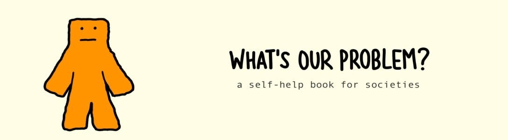
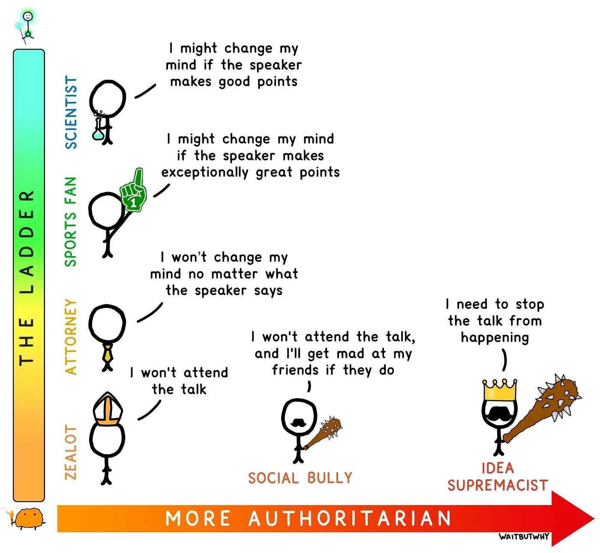
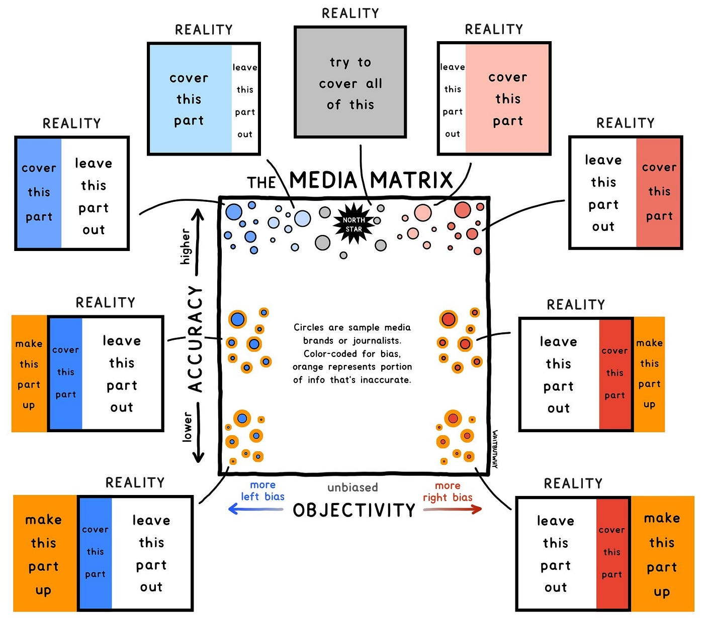
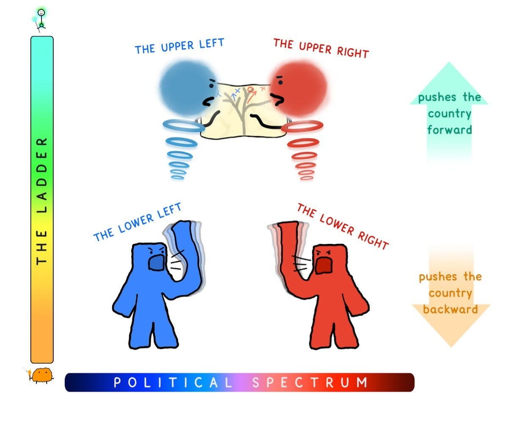

Dans cet ouvrage, Tim Urban décrypte un sujet large qui touche à la plupart des problèmes auxquels nous faisons face dans notre rapport aux autres et aux conflits d’opinions qui bouleversent l’équilibre de nos sociétés. À la vue du progrès exponentiel que l’on connaît dans les secteurs technologiques, industriels, économiques, mais aussi sur des questions sociales ou politiques, notre société a du mal à s’adapter au rythme de ces changements majeurs. Il est difficile de prendre conscience de l’ampleur de ces derniers à l’échelle d’un cycle de vie individuel, et c’est notamment pourquoi l’auteur nous invite d’abord à prendre du recul sur nos origines.
Il introduit pour commencer un livre (fictif) d’histoire qui contiendrait sur 1000 pages, l’histoire de la vie sur Terre, de l’apparition du premier atome de carbone jusqu’à nos jours, soit près de 3,5 milliards d’années. Si l’on veut représenter de manière parlante ce qui nous précède, nous pouvons directement nous rendre à la page 975 : ici seulement commence le début de notre histoire connue et documentée à ce jour… Encore plus incroyable, se trouvent dans les deux dernières pages du livre l’ensemble des découvertes majeures à l’origine des révolutions scientifiques et industrielles. Pour résumer : la vie telle que vous et moi la connaissons aujourd’hui a été façonnée au cours de ces deux dernières pages seulement !
A travers cette prise de conscience, l’auteur souhaite nous aider à appréhender le poids et l’impact de l’histoire dans nos vies actuelles, mais surtout de reconnaître le chemin parcouru jusqu’ici par notre espèce, ceci étant le meilleur moyen de comprendre la futilité des conflits d’opinions et de pouvoir qui sont aujourd’hui à l’origine de nombreux problèmes dans le monde. L’auteur illustre ceci par une citation de l’écrivain et universitaire George Santayana, expliquant que “ceux qui ne se souviennent pas du passé sont condamnés à le répéter”. L’espèce humaine dispose de “super-pouvoirs”, d’une conscience et d’une intelligence collective démesurées, qu’elle est malheureusement en train de retourner contre elle du fait de mécanismes, biais ou comportements primitifs que nous présenterons ici, qu’il nous faut à tout prix éviter et savoir identifier. Cet ouvrage de Tim Urban est une vraie leçon de vie en société, pour les esprits flexibles du XXIème siècle.
Esprit primitif et esprit avancé
Notre espèce est dotée de facultés, couramment nommées de manière scientifique par le phénomène de l’esprit. Celui-ci peut prendre plusieurs formes et est très malléable. La forme primaire de l’esprit humain fût l’esprit “primitif”. Adapté à l’habitat naturel animal issu de nos gènes du passé, cet esprit faisait appel à des automatismes qui servaient à répondre à des besoins primitifs : se nourrir, se défendre dans un environnement naturel, protéger les membres de son entourage… Il se rapporte finalement à une vision très défensive voire conflictuelle des relations sociales.
Cependant, nous sommes devenus une espèce animale assez différente des autres grâce à des capacités supérieures (pensée abstraite, langage développé, relations sociales, conscience collective…) qui nous ont permis de prendre le contrôle de notre environnement. Au cours des 12000 dernières années, soit près de 500 générations “seulement”, notre esprit n’a pas pu s’adapter assez rapidement à un environnement qui se développait de manière exponentielle du fait de notre influence. Ainsi, notre esprit primitif tient encore une place plus ou moins importante dans la manière dont nous appréhendons certaines situations, dans un monde moderne rempli de complexité et d’interactions multiples.
Contre l’esprit primitif dont nous sommes issus à l’origine, notre espèce a su développer au fil du temps une autre de ses facettes : l’esprit “avancé”. Ce dernier nous permet de réfléchir de manière critique, abstraite, empathique, ou en tenant compte de multiples sources d’informations qui peuvent aussi être contradictoires. Bref, de permettre à notre pensée de sortir de sa zone de confort pour se confronter à l’environnement extérieur.
Afin de comprendre comment les différents esprits sont répandus parmi les individus, il convient de présenter un modèle qui s’appuie sur un axe sur lequel évolue l’intensité selon laquelle l’individu se positionne entre les deux esprits. L’esprit avancé va d’abord privilégier le besoin d’obtenir la vérité, lorsque l’esprit primitif va quant à lui privilégier le biais de confirmation, afin de défendre son opinion à tout prix. Ici, il est important de noter, selon l’auteur, que ces deux esprits se confrontent en permanence dans le cerveau de chacun d’entre nous. La jauge permet de nuancer ces deux pôles en expliquant que nous tendons à nous situer sur un point de cet axe, sans forcément toucher ses extrémités.
L’idée de savoir où se situe notre état d’esprit sur cet axe nous rapproche d’une forme de sagesse. Pour illustrer ceci, l’auteur prend l’exemple de l’acquisition de connaissances : celles-ci proviennent d’une multitude de sources issues de divers individus et il est de plus en plus facile de l’acquérir de nos jours. Cependant, la véritable compétence réside aujourd’hui en notre capacité à discerner le vrai du faux, à faire le tri parmi l’information disponible, plus ou moins fiable. Pour cela, les esprits “primitifs” sont plus tentés de sélectionner de l’information via le biais de confirmation, quand les esprits “avancés” sont plus enclins à faire la part des choses, à rechercher les informations factuelles et vérifiables. Il s’agit donc ici d’introduire une autre variable : la réflexion.
L’auteur nous présente ainsi un modèle d’échelle sur laquelle différents types de réflexion vont se positionner et celui-ci résulte plus largement des états d’esprit présentés précédemment (plus ou moins primitif).

L’échelle se distingue entre sa partie haute et sa partie basse : la réflexion de haut-niveau et la réflexion de bas-niveau. Dans ces deux zones se retrouvent plusieurs types de réflexion.
- La partie de haut-niveau de réflexion contient les “scientifiques” et les “enthousiastes” ou “fans”. Ces deux catégories permettent aux individus qui les composent d’avoir des opinions flexibles : soit lorsque de bons arguments vérifiables sont produits (cas du scientifique qui recherche la vérité), soit lorsque des arguments vraiment exceptionnels sont produits (cas du fan/enthousiaste qui ajoute tout de même un aspect subjectif et émotionnel à son choix).
- La partie de bas-niveau de réflexion contient quant à elle les “avocats” et les “fanatiques”. Les modes de réflexion sont ici très simples : l’un et l’autre agissent de manière à rendre service à leurs opinions, et non pas l’inverse, afin que les arguments produits viennent supporter les opinions. La différence entre les deux réside simplement dans le fait que “l’avocat” va chercher à argumenter en prenant son opinion comme postulat initial alors que le “fanatique” ne va même pas prendre part au débat si son opinion n’est pas partagée ou défendue.
L’échelle crée ainsi deux environnements distincts dans lesquels se développe la réflexion : le laboratoire d’idée d’un côté et la caisse de résonance de l’autre. Les idées circulent librement et se confrontent sous forme d’expérimentations et d’essais dans le laboratoire d’idées, composé de profils “scientifiques” et “fans/enthousiastes”. A partir d’idées indépendantes se construit ici une sorte de génie collectif, qui résulte en une sorte d’universalité de la réflexion issue de la rencontre d’opinions et d’idées différentes, ouvrant considérablement le champ des possibles. La caisse de résonance est quant à elle un environnement qui prône la collaboration sur des idées préconçues afin de renforcer les arguments à l’origine de celles-ci ou permettant de les défendre. Ici, la réflexion est polarisée et tout est divisé en des camps opposés. Plus important encore, l’identité d’un individu et ses croyances ou opinions ne font qu’un : le fait de critiquer l’opinion de tel individu revient à critiquer directement l’individu pour ce qu’il est ou représente.
A l’aide de ces représentations du positionnement de l’esprit et de la réflexion, l’auteur nous montre une échelle sur laquelle notre société se positionne, où l’équilibre a toujours été complexe à maintenir et où de plus en plus d’individus aujourd’hui se retrouvent aux extrémités les plus strictes et autoritaires de l’opinion.
La fabrique de l’opinion
Si l’on reprend l’histoire politique de la plupart des pays occidentaux, souvent caractérisés de pays “démocratiques”, nous pouvons facilement constater qu’il a toujours été question de jeux de pouvoirs. Cependant, à l’origine des démocraties modernes se trouve un concept novateur pour l’époque, et sur lequel reposait de grands espoirs : l’enlightenment ou la pensée des Lumières. Introduite au XVIIème siècle par les philosophes et penseurs du siècle des Lumières, celle-ci proposait une alternative aux pouvoirs autoritaires, lois intransigeantes et au contrôle strict de la population, en créant notamment la notion de pouvoir libéral. Ce courant novateur proposait donc plus de liberté dans un environnement guidé par les principes de liberté d’opinions, de libre propriété ou d’entreprise, orienté vers un modèle économique capitaliste dont les racines commençaient à se développer à l’époque.
Les États-Unis ont connu à cette période une réelle opportunité de créer une société sur ces nouveaux principes, en fondant une constitution basée sur les principales idées issues des grands ouvrages des Lumières. Cependant, l’auteur nous explique que la société américaine, si l’on conserve cet exemple, a toujours connu une forme de polarisation au fil de son histoire : loyaliste contre révolutionnaire, fédéraux contre anti-fédéraux, nordistes contre sudistes ou plus récemment citoyens américains contre immigrants. Même lorsque ces événements ont pu avoir lieu hors du territoire national, cela a souvent provoqué des dissensions : lors de la GM2, la guerre du Vietnam ou la guerre froide bien entendu, mais aussi sur des conflits à l’étranger où la question de l’implication toujours grandissante du pays fût remise en question (Koweit, Irak, Afghanistan…). Peu importe les situations qu’a pu connaître le pays, il y a toujours eu des événements provoquant des conflits d’opinions entre deux pôles distincts au sein de la population, et pas seulement sur le spectre politique.
La liberté prônée par les Lumières prend sa source en commençant par la liberté d’expression, qui est aujourd’hui une valeur que l’on retrouve dans la quasi totalité des constitutions dites “libérales” ou “démocratiques”. Cependant, il est nécessaire de se rendre compte qu’il s’agit également de l’un des principes les plus fortement remis en cause ces dernières années au sein de ces mêmes sociétés. Plus largement, la fabrique de l’opinion réside principalement dans ce que le gouvernement et les médias choisissent de partager à la population. Ainsi, ils choisissent souvent une méthode qui consiste à représenter les choses sur un axe disposant forcément de deux pôles, qui viennent à entrer en conflit dès lors que l’information est présentée du point de vue opposé. Ainsi, notre société s’efforce de faire rentrer les individus dans des cases en fonction de la position de leur point de vue sur un axe horizontal caractérisant les opinions. Nous devrions hélas nous focaliser plutôt sur la manière dont l’opinion doit être étudiée verticalement, entre les opinions de haut niveau et de bas niveau, au même titre que les types de réflexion ou d’esprit évoqués précédemment.
Sur le modèle vertical de l’étude de l’opinion présenté par l’auteur, on retrouve au sommet deux “super-génies” d’opinions, qui peu importe le degré sur lequel se situent leurs opinions horizontalement parlant, vont arriver à nuancer leurs propos en expliquant que certains points peuvent être plus à droite ou d’autres plus à gauche de l’axe. L’auteur nous rappelle que notre espèce est dotée d’une complexité incroyable et que de mesurer nos opinions sur un simple axe horizontal dont les extrémités sont si facilement acquises, semble tout à fait irréaliste et particulièrement simpliste. Cependant, nous faisons de plus en plus face à des rapports directs aux algorithmes et technologies faisant usages intensifs de simples 1 ou 0, pour représenter l’information de manière binaire. Est-ce vraiment ce à quoi nous souhaitons nous réduire ? Nous sommes dotés de capacités d’interprétation, de pensée abstraite et de nuance, ce dont aucune autre espèce n’a jamais bénéficié et nous réduisons pourtant notre champ d’interprétation à une opposition simpliste entre deux opposés. Il est plus simple pour les élites politiques de classer les individus en deux camps plutôt que de les laisser nuancer leurs opinions sur différents sujets. “Nous contre les autres” : pour caricaturer, c’est ainsi que les représentants politiques dessinent l’opinion publique afin de bien distinguer leurs partisans des opposants. Cela renforce aussi beaucoup le sentiment d’appartenance et leur permet enfin d’éliminer la nuance qui risquerait d’en faire basculer certains d’un côté ou de l’autre…
Autres acteurs importants à l’origine de la fabrique de l’opinion : les médias. Aujourd’hui, les médias sont démultipliés au sens large par les réseaux sociaux, principalement par l’intermédiaire de plateformes jouant également un rôle majeur.

L’auteur propose une matrice permettant de comprendre comment se comportent les acteurs du secteur médiatique, et comment cela joue un rôle non négligeable sur l’opinion et la diffusion de l’information. Sur un axe vertical représentant le degré de précision/véracité de l’information, vont se décliner les acteurs du secteur qui laissent plus ou moins la place à des informations allant d’un caractère vérifiable, puis biaisé, jusqu’à celui de fake news, dont on entend parler de manière croissante depuis quelques années, peut-être du fait de l’essor des réseaux sociaux. Sur un axe horizontal représentant le degré d’objectivité de l’information se déclinent les acteurs qui prennent plus ou moins partie pour l’information qui favorise leur propre camp vis-à-vis d’un autre. Au centre, tout en haut de la matrice se trouve l’étoile qui représente la source fiable, vérifiable et non biaisée, ne prenant pas non plus parti pour quiconque. Ce type d’acteur étant très rare du fait de la polarisation croissante de l’opinion, les acteurs les plus présents aujourd’hui sont ceux situés aux deux extrémités hautes de la matrice, qui partagent majoritairement de l’information vérifiable tout en s’assurant cependant de prendre parti pour l’opinion à laquelle ils ont choisi de s’identifier.
Sur les réseaux sociaux, ces voix sont d’autant plus présentes qu’elles tendent en complément à partager de l’information non vérifiable, se rapprochant ainsi des extrémités basses de la matrice. Ce sont les sources d’information qui présentent le plus de risques pour la société. Le fait que chaque individu puisse prendre part à la discussion, par l’intermédiaire des plateformes de diffusion, rend le volume d’information très important et cela pousse l’opinion à s’informer de manière succincte. Ces nouveaux acteurs que sont les réseaux sociaux représentent un risque important, à l’origine de comportements biaisés et irresponsables facilités par la saturation du paysage médiatique. Ceci crée un terrain fertile pour les extrêmes, qui se contentent de reprendre le flambeau et de diviser l’opinion en deux camps opposés, le plus simplement possible. Une étude intéressante que nous partage l’auteur fait état de l’évolution du vote des américains sur des élections présidentielles et législatives successives, situées à quelques mois d’intervalles : entre 1972 et 1980, la corrélation liée au vote d’un seul et unique parti lors des deux élections successives était de 0,54 (1 étant une corrélation parfaite des deux votes pour un seul et même parti), pour ensuite augmenter graduellement et atteindre entre 2012 et 2014 une corrélation de 0,97… De telles représentations prouvent que la polarisation de l’opinion s’est installée durablement. Cela ne présage rien de bon pour nos sociétés, car de tels scénarios se produisent aujourd’hui au sein de nombreuses démocraties libérales à travers le monde.
Une polarisation croissante
Si l’on s’intéresse plus précisément au paysage politique, en gardant l’exemple américain proposé par l’auteur, celui-ci nous invite à constater que la polarisation impacte autant le camp républicain que celui des démocrates, et celle-ci a été croissante au fil du temps.
Côté républicain, dans les années 50, les personnalités politiques modérées étaient majoritaires (menées notamment par Dwight Eisenhower) et ils avaient une vision équilibrée des sujets politiques, sans forcément pousser vers une idéologie stricte. Ainsi, l’auteur nous explique que d’étudier le paysage politique sur un axe horizontal, au même titre que pour l’esprit ou l’opinion, n’est pas rationnel. Une partie du camp républicain a commencé à tendre vers des excès fondamentalistes à partir notamment des agissements de la campagne de Goldwater en 1964. Cependant, en caractérisant la droite républicaine fondamentaliste d’extrémiste, cela revenait à l’assimiler à des idées conservatrices plutôt traditionnelles chez les républicains. Hélas les positions que les fondamentalistes prenaient sur certains sujets étaient opposées aux valeurs conservatrices : favorables à la guerre nucléaire, à la politique raciale ou encore à certaines pratiques institutionnelles anti-démocratiques. Il suffisait pourtant de distinguer verticalement la droite républicaine, avec sa frange de haut niveau et celle de bas niveau, cette dernière représentant la minorité la plus extrême.
Il en va de même côté démocrate, notamment si l’on s’intéresse à la politique sociale libérale prônée par le parti au fil des décennies. A l’origine du progressisme, les démocrates partaient du principe que les grandes avancées en justice sociale connues aux États-Unis faisaient partie de leur agenda politique, afin de rendre la société américaine plus juste. Plus récemment, de nouveaux champs d’étude se sont développés au sein de cet environnement, avec la théorie critique en sociologie notamment. En s’intéressant majoritairement à certaines populations ou minorités qui façonnent le paysage social, cette nouvelle théorie s’est petit à petit développée en une sorte d’idéologie politique qui a obtenu une certaine notoriété. Cependant, c’est à la source de celle-ci que les fondamentalistes de la justice sociale se sont imposés : selon eux, les institutions, la culture et le système dans son ensemble favorisent entre autres le patriarcat et la suprématie “blanche”. Les démocrates, à l’origine du mouvement progressiste, se sont retrouvés avec une frange extrêmiste mettant en avant des idées se trouvant à l’opposé de leurs valeurs traditionnelles : ils prônent le changement radical de l’ensemble des institutions et des textes constitutifs de la société américaine, contre le modernisme qui a facilité la diffusion de valeurs patriarcales, capitalistes et socialement discriminantes.
Avec ces deux exemples, on constate que la politique de bas niveau touche tous les bords politiques. Il est intéressant de comprendre comment est-ce que ces factions extrémistes peuvent prendre autant de place dans le paysage politique jusqu’à représenter une majorité au sein de chacun des partis. Lorsque des positions très extrêmes commencent à émerger, la situation saine voudrait que les esprits avancés au sein de chacun des socles de réflexion de haut niveau des partis puissent argumenter contre ces idées, afin d’établir un équilibre normal dans le débat politique. Il est primordial que des partisans d’un même parti puissent débattre sainement sur certaines positions, du moins ce devrait être le cas. Hélas, lorsque les positions sont très idéologiques et tranches trop avec le positionnement traditionnel du parti, les modérés ne savent pas comment se positionner et les extrêmes prennent du poids. C’est ici que rentrent en action les jeux de pouvoir : lorsqu’ils ont pris la place, les fondamentalistes se battent de manière plus ou moins honorable pour attirer le plus de partisans et décrédibiliser les détracteurs, au sein de leur propre camp. Finalement, les frontières deviennent floues et le fait de rejeter ardemment les franges extrémistes ne fait que renforcer leur présence, finissant par dilapider la pluralité des idées au sein d’un même parti.

L’auteur explique de manière très juste que la position modérée est la plus saine car elle se situe non pas uniquement entre deux opposés sur l’axe de réflexion ou d’opinion, mais surtout parce qu’elle laisse la place à une certaine sophistication de la réflexion, laissant le champ des possibles ouvert. La position extrémiste est quant à elle réduite à proposer une dichotomie stricte entre deux fronts : le bien et le mal, la droite et la gauche, etc. Cette distinction se réduit une nouvelle fois à un axe horizontal qui est bien trop simpliste pour représenter l’éventail d’idées que pourrait réellement proposer le paysage politique.
L’équilibre en question
Le fait de maintenir un équilibre, au-delà de reposer sur les tendances plus ou moins extrêmes des partis politiques, des médias ou des individus, s’appuie également sur des outils utilisés pour contrôler ou manipuler l’opinion et la réflexion. Ainsi, l’auteur cite plusieurs mécanismes et/ou phénomènes qui font réellement basculer l’équilibre sociétal et notamment l’opinion publique.
Pour commencer, un mécanisme tel que la censure est souvent identifié au sein de sociétés autoritaires ou non démocratiques, cependant il faut aujourd’hui revoir la définition de ce terme dans un environnement démocratique, pour comprendre qu’il peut également y trouver sa place d’une manière plus nuancée. L’auteur nous explique que l’on définit la censure par le contrôle de ce qui est dit, mais qu’il s’agit en réalité d’un contrôle de ce que l’on pense. C’est pourquoi il est primordial, pour les extrêmes notamment, de premièrement convaincre l’individu avant de lui permettre de s’exprimer. Ceci est d’autant plus important aujourd’hui que nous vivons dans une société de l’information, dans laquelle les idées et réflexions se diffusent de manière débridée entre les individus. Si on laisse la place à la réflexion, la censure ne fait plus son travail et la diffusion, même si elle semble muette, est en marche. L’objectif de la censure est bien entendu d’empêcher les individus de s’exprimer, en jouant sur la peur qu’aucun concitoyens ne partagent leurs points de vue et n’osent s’exprimer avec eux. Ce mécanisme rejoint celui du “dilemme du prisonnier”, largement répandu en sociologie. Pour fonctionner, de tels mécanismes doivent être diffusés dans des environnements qui sont par essence des centres de réflexion de haut niveau : une entreprise, une université, un parti politique, voire un gouvernement. C’est ici qu’ils développent leur plein potentiel néfaste.
L’un des autres mécanismes puissants appréciés des franges autoritaires et extrémistes repose sur l’ignorance pluraliste : le fait de penser que nos opinions personnelles sont forcément différentes de la majorité des individus. La réalité est toute autre, ce mécanisme s’explique précisément lorsque nos opinions sont partagées par d’autres individus, mais que l’opinion autoritaire et extrémiste cherche à les étouffer et les remplacer. A force d’entendre celles-ci de manière répétée, les individus commencent à penser qu’il s’agit des opinions les plus rationnelles et n’osent plus s’y opposer, puis finissent par y adhérer par défaut. La censure a gagné.
D’un autre côté réside des mécanismes plus souples, mais qui finissent par causer les mêmes effets néfastes. En s’appuyant sur des concepts largement partagés en société, tels que la dignité, la tolérance ou la diversité, des fondamentalistes arrivent également à forcer leur voie dans l’opinion publique pour diffuser leurs idéaux autoritaires. Par exemple, la notion de dignité est remplacée par celle de “victimisation”, utilisée pour défendre des concepts d’égalité raciale, de genres ou de statuts sociaux afin de stigmatiser une majorité de la population pour qu’elle adhère à des idéaux beaucoup plus strictes. Il s’agit également d’élargir la définition de ces concepts et valeurs afin d’intégrer de plus en plus de situations qui reflètent des inégalités ou des discriminations, là où il n’y a pourtant pas lieu d’en avoir. Ces individus jouent sur la notion de tolérance afin d’augmenter la jauge à un niveau auquel plus rien ne soit acceptable et où toute situation puisse porter à confusion, afin d’identifier un individu comme raciste, homophobe ou misogyne par exemple. Karl Popper avait introduit le paradoxe de la tolérance, qui traite justement du fait d’être tolérant, donc d’accorder celle-ci à tout individu, même à ceux qui ne tolèrent pourtant pas d’opinions contraires, et que cela constitue un risque pour la tolérance. Ceci s’applique à notre sujet puisque les fondamentalistes qui utilisent des mécanismes d’extrapolation ou de surinterprétation pour stigmatiser des minorités ou individus agissent de manière intolérante, en refusant de tolérer ne serait-ce qu’un avis contraire, et le risque réside précisément dans le fait de tolérer ceci. Le paradoxe de Popper permet de nous défendre contre cela, en brandissant la tolérance comme barrage à tous les abus que certains individus veulent mettre sur le compte de celle-ci.
L’auteur nous rappelle enfin que l’environnement dans lequel nous évoluons influence beaucoup l’équilibre des opinions et celui de nos sociétés. Au-delà des mécanismes propres aux démocraties que nous connaissons notamment, le niveau de l’esprit et de réflexion de chacun d’entre nous est l’un des éléments majeurs qui participent à l’équilibre entre les individus et leurs opinions, valeurs, principes et modes de vie en société. Lorsque tout cela n’est plus maintenu par le collectif, alors les jeux de pouvoirs et des mécanismes néfastes comme ceux mentionnés précédemment viennent polluer l’ensemble de la société. Petit à petit, les suprémacistes, fondamentalistes et autres extrémistes viennent prendre une place croissante dans le débat et cela vient modifier l’état d’esprit général du collectif.
Notamment, l’auteur nous explique que les lois de liberté d’expression sont à l’origine de modèles tels que celui de “place de marché d’idées”. Le principe étant qu’un espace libre d’accès et d’échange comme celui d’un marché quelconque s’applique à notre manière d’échanger des idées et réfléchir en communauté, tout en acceptant que les individus “clients” de ces idées puissent y adhérer ou non en toute liberté, et de manière individuelle. Par exemple, l’auteur mentionne les milieux universitaires comme le premier mécanisme de découverte de la connaissance en société. Il s’agit d’une place de marché comme aucune autre, où la découverte et la confrontation d’idées sont vecteurs de connaissance et de compréhension. La liberté joue ici son rôle afin de créer ce que l’intelligence collective fait de mieux. Cependant, toujours avec l’exemple des États-Unis, ce sont ces milieux universitaires qui ont d’abord été touchés par les partisans fondamentalistes ou extrémistes, venus instaurer de forces leurs idéaux, en usant de manières autoritaires et violentes. Lorsque l’on touche la strate la plus élevée de réflexion et d’esprit, on gagne un certain pouvoir d’influence sur l’opinion publique en jouant du positionnement légitimement élevé, à l’origine de l’information et de la connaissance. Ce fût le même scénario avec les médias et plus récemment, avec les réseaux sociaux…
Les réseaux sociaux ont quant à eux, malgré le potentiel dangereux très rapidement considéré, eu d’abord un impact favorable au maintien de l’équilibre face aux élites et puissants. En effet, la population a réalisé qu’elle possédait un pouvoir important permettant de pousser à prendre conscience de sujets parfois étouffés par les médias, les entreprises ou le gouvernement. Cela a permis une réelle prise en main du discours public, jusqu’à maintenant détenu majoritairement par les élites, mais aussi une démocratisation de la justice. Il est devenu possible de dénoncer des entreprises non respectueuses des conditions de travail ou de dénoncer une personnalité politique accusée de prise illicite d’intérêts par exemple, en partageant de manière massive des preuves au plus grand nombre et en obtenant de l’engagement, mécanisme central à l’origine du fonctionnement des réseaux sociaux. Cependant, cela a vite été rattrapé par l’esprit primitif que chacun d’entre nous retient profondément, pour voir apparaître des campagnes de harcèlement souvent appuyées sur des fake news relayées par des individus en recherche d’attention, celle-ci étant à portée de main (ou de clavier) sur les réseaux sociaux.
Pour finir, l’auteur nous rappelle de positionner la liberté d’expression, la réflexion et l’esprit libre au cœur de nos comportements en société et vis-à-vis de n’importe quelle situation que l’on puisse rencontrer. Pensez à petite échelle et prenez conscience que cette personne avec qui vous êtes en profond désaccord vit aussi la charge de son quotidien, au jour le jour, tout comme vous, avec ses malheurs et ses joies, mais intègre surtout de nombreuses variables venant influencer son comportement, ses idées, ses envies… tout comme vous. Pensez aussi à grande échelle, intéressez-vous à tout ce qui vous entoure, notamment ce qui fait de nous de si petites créatures dans un univers si vaste, cela pourrait permettre de se rendre compte que les conflits ou désaccords peuvent parfois s’avérer inutiles. Afin d’élever le débat et la réflexion en société, il serait judicieux de prendre un certain recul et d’intérioriser un peu plus nos réflexions avant de s’exprimer ou d’intégrer le débat, dans un environnement toujours plus dynamique où la quête de la vérité doit rester un objectif central.
Blaise Pascal a lui-même dit que “tout le malheur des hommes vient d’une seule chose, qui est de ne savoir pas demeurer en repos dans une chambre”. Une bonne inspiration pour prendre le temps de réfléchir…